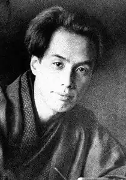

АКУТАГАВА Рюноске (1.03.1892, Токіо — 24.07.1927, там само) — японський письменник.
Акутагава народився у сім'ї торгівця молоком Ніїхара Носідзо. Його дитинство важко назвати щасливим. Батько був байдужим до нього, матір незабаром після народження сина збожеволіла. Ще за життя батьків А. віддали на виховання у сім'ю дядька, начальника будівельного відділу Токійського муніципалітету Акутагави Мітіакі, прізвище якого він прибрав. Названий батько А. мав багату бібліотеку, був любителем середньовічної поезії Японії та Китаю. Під його впливом А. заохотився до читання японської та китайської класики, західноєвропейських авторів. У чотирнадцять років він відкрив для себе А Франса, Г. Ібсена, замолоду ознайомився з творами Ш. Бодлера, А. Стріндберга, з філософією А. Берґсона, А. Шопенґауера, Ф. Ніцше.
У 1913 р. А. вступив у Токійський університет на відділення англійської літератури. У студентські роки він розпочав писати новели, у 1914 р. разом з друзями — письменниками-початківцями Куме Macao та Кікуті Хіросі — створив групу "нової майстерності" і заснував журнал "Сінсіте". Після закінчення університету (1916) А. працював викладачем англійської мови у Морському механічному училищі в Нокосуці. Викладацька праця не задовольнила А., котрий усвідомив, що його покликання — література. У 1919 р. він залишив училище і переїхав у Токіо. Деякий час А. працював у редакції газети "Осака манніті", згодом цілком віддався літературній творчості. У Токіо А. зблизився з найвідомішим тогочасним письменником Японії Нацуме Сосекі, який справив на нього помітний вплив. Твори А. зажили популярності, він почав відігравати значну роль у літературному житті країни, але спогади про долю матері, жах перед божевіллям, стан "пекла самоти", змальований ним в одній з новел, відчуття того, що він опинився у творчому тупику, мучили свідомість письменника. У віці тридцяти шести років А. вчинив самогубство, прийнявши смертельну дозу вероналу. А. прийшов у літературу в період пошуків шляхів оновлення країни, захоплення японською молоддю Заходом, часто за рахунок відмови віл національних традицій. А. мріяв поєднати у своїй творчості кращі сторони національної та європейської літератур, що значною мірою визначило характер розвитку японської прози XX ст. Коли публікувалися перші новели А, в японській літературі домінував натуралізм. Його межовим вираженням стала егобелетристика, яка ґрунтувалася на уявленні про те, що достовірно письменник зможе зобразити лише самого себе. "Школа нової майстерності", заснована А, Куме та Кікуті, була протестом проти фотографічності, відмови від ідеалу в мистецтві, декларованих японськими натуралістами. Письменники нової школи боролися за право на вигадку, фантазію, гротеск у художній творчості, на відбір яскравих життєвих фактів, які б розкривали тему якнайвиразніше, з використанням образної мови. Принципи "школи нової майстерності" А втілив у своїй творчості. Письменник перейняв прозорий, лаконічний стиль середньовічної літератури. У його творчості використовується прийом ремінісценції, що сягає своїм корінням стародавньої японської та китайської поетичної традицій, згідно з якими мотив запозичення передбачав наявність підтексту, який виявляв усвідомлений зв'язок творчості поета з історично-культурним минулим країни. Використовуючи прийом ремінісценції, А. не обмежувався японськими сюжетами, але прагнув установити зв'язок своєї творчості з європейською літературною традицією. Сюжет однієї з ранніх новел А. "Ворота Расьомон "("Рашомон", 1915) запозичений зі збірки кінця XI ст. "Кондзяку моногатарі" ("Стародавні повісті"). А. цілком зберіг кістяк сюжету, але наповнив його новим змістом. У "Кондзяку моногатарі" йшлося про злодія, який пограбував стару жінку у верхньому ярусі воріт Расьомон. У новелі А. злодій перетворений у слугу, який втратив роботу після розорення господаря. Лаконічні деталі змальовують обстановку у столиці, що пережила землетрус, ураган, пожежу, голод. Навкруги розруха, запустіння, люди на грані відчаю. Побачивши старчиху, яка виривала волосся в мертвої жінки біля воріт Расьомон, слуга спочатку обурився її поведінкою. Але старчиха доводить йому, що без крадіжок у цей час не вижити, і слуга засвоює її мораль, сам стає злодієм, обкрадаючи старчиху. На відміну від середньовічної повісті, в новелі А. психологічно осмислюються вчинки персонажів: умови життя перетворюють людину в егоїста, роблять її злочинцем. Але письменник при цьому підкреслює і нелюдяність філософії вседозволеності. У "Муках пекла"("Дзі гокухен", 1918), іншій новелі, зверненій до минулого, письменник вирішує одвічну проблему мистецтва і художника, морального обличчя творчої особистості, "генія та злочину". Правитель Хорікава доручив талановитому художникові Йосіхіде зобразити на ширмах муки пекла. Впевнений у тому, що творити можна лише з натури, Йосіхіде малює чортів, побачених ним у сні; щоб відтворити муки грішників, одного з учнів він закував у кайдани, на іншого нацькував хижу сову. Але йому не вдається центральна частина картини із зображенням жінки, яка гине у палаючій кареті. Він звернувся зі зухвалим проханням до правителя, і Хорікава жертвою обрав дівчину, яка не піддалася його залицянням, — дочку Йосіхіде. Художник став свідком загибелі своєї дочки у полум'ї палаючої карети. Страшна сцена пробудила у ньому натхнення, але, завершивши картину, Йосіхіде вчинив самогубство. Виразні деталі портрета (занадто червоні губи, похмурий вигляд, схожість із мавпою) покликані викликати у читача неприязнь до Йосіхіде. Не випадково поряд з художником у новелі виведений образ Хорікави. Вони близькі за характерами. У своїй жорстокості, в задоволенні своїх бажань вони не визнають жодних моральних обмежень. Йосіхіде створив шедевр, але його загибель закономірна. Мистецтво, доводить А., не може бути вільним від моралі, і художник повинен бути обережним при виборі засобів для створення свого твору. Світ, який вибудовує у своїх ранніх новелах А., — це світ духовної спустошеності, егоїзму, краху моральних цінностей. Цей світ страшний для самотньої, незахищеної особистості. У "Бататовій кйш/"("Імогаю", 1916) А. звернувся до образу маленької людини. Сюжет новели не пов'язаний із "Шинеллю" М. Гоголя, але образ героя "Бататової каші" виник під враженням А. від гегелівського персонажа. Як і Акакій Акакійович, герой А. — непомітна, нікчемна людина у зношеному одязі, з якої вічно кепкують. Нікчемне і також найзаповітніше бажання героя — досхочу наїстися бататової каші. Вирішивши покепкувати з нього, могутній воїн Тосіхіто запросив героя в гості і змусив його з'їсти стільки каші, що він зрозумів: ніколи вже більше він не зможе взяти її до рота. Так зазнає краху сокровенна мрія маленької людини. Беззахисний герой зіткнувся з грубою силою, владою в особі Тосіхіто. А. не ідеалізує свого героя, підкреслюючи його нікчемність, невміння боротися за свою гідність, але в новелі звучить думка про неприпустимість знущань над слабкою особистістю. У похмурому світі, що постає зі сторінок новел А., єдиним світлим променем виявляється людська доброта. У новелі "Мандарини "("Мікан", 1919) непоказна сільська дівчина, яка сидить у вагоні навпроти оповідача, несподівано відчиняє вікно і кидає дітям, які прийшли провести поїзд, жменю мандаринів. її простий учинок — свідчення її доброти і щедрості — перетворює дійсність в очах оповідача, змушуючи його забути про втому і сум, про ницість і нудьгу людського життя. Думка про одвічну гріховність, егоїзм, духовну надламаність людини, утверджувана в ранніх новелах А., була досить актуальною. Вона народилася під впливом конкретних історичних умов Японії, що прагнула до колоніальних загарбань, ігноруючи моральні принципи у своєму бажанні просунутись уперед. Наприкінці 20-х рр. А. все частіше звертався до сучасних сюжетів. Коло тем, порушених у його новелах цього періоду, широке. А. пише про внутрішню чистоту, радісне світовідчуття людини, яка стоїть на порозі життя ("Бал " — "Бутокай", 1920), про абсурдність сліпої віри ("Мадонна у чорному " — "Кокуї сейбо", 1920), про суб'єктивність людських знань про світ, неможливість пізнати істину ("Ухащі" — "Ябу но нака", 1922), про духовну загибель людини під тиском сучасного світу ("Грудка землі"— "Іккайно путі", 1923). Однією з найголовніших проблем творчості А. 20-х років стало розвінчання культу бусідо, широко поширеного в Японії початку XX ст. Дотримання норм бусідо — етичного кодексу вважалося засобом відродження країни. Модними стали твори, які прославляли шляхетність та войовничість самурая. До критики культу бусідо А. звернувся вже в одній з ранніх новел "Носова хустинка "("Хан-кеті", 1916), де він доводив абсурдність і штучність спроб перенесення середньовічних традицій у XX ст. У 20-х рр. критика культу бусідо у творчості А. стала різкішою. У новелі "Генерал" ("Сьогун", 1922) виведений образ сучасного автору самурая. Генерал змальований у різних життєвих ситуаціях: з "театральним пафосом" він напучує солдатів перед боєм, закликаючи їх зробити свої тіла схожими на снаряди; він стає суворим захисником моральності, забороняючи показувати солдатам п'єсу, що видається йому вульгарною; його обмеженість і у ставленні до мистецтва, і в сліпій відданості ідеалам бусідо повністю розкривається у сімейній обстановці, під час розмови з сином. У "Момотаро "(1924), пародії на відому японську казку про народженого з персика хлопчика Момотаро, який підкорив Острів Чортів, А. вивів сатиричний образ японця-завойовника. Підсумковим твором письменника стала новела "Украініводяників"("Капна", 1927). Продовжуючи традиції Дж. Свіфта, А. Франса, А. зобразив суспільство як країну водяників — капп. Таким воно бачилося оповідачеві — пацієнтові психіатричної лікарні. Єдиною тверезо мислячою істотою у цьому суспільстві виявляється божевільний оповідач. А. цілком правомірно визнаний письменником-класиком XX ст. З 1935 р. в Японії заснована літературна премія імені А.